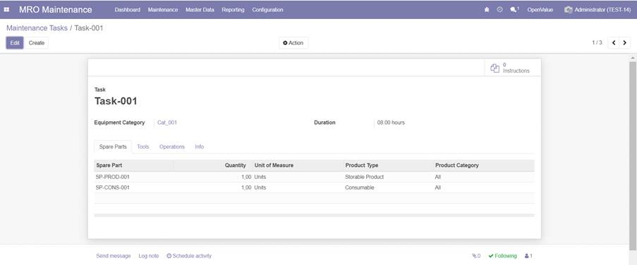

MRO MAINTENANCE
The MRO Maintenance application supports
Maintenance Process Management as shown in the following picture:
The maintenance process steps are detailed below:
• maintenance
request creation and its printout
• request to
approval (communication via email)
• maintenance
order automatic creation after request approval
• spare
parts, tools and check list assignment to maintenance order
• scheduling
execution dates with planned duration
• maintenance
order printout
• maintenance
order confirmation (starting of maintenance job) with actual start date setting
and maintenance planned cost automatic calculation based on spare parts costs,
tool hourly rate and assigned personnel cost rate
• execution
of maintenance job checking material availability and reserving tools
• maintenance
order closing by releasing tools, automatic request closing, communication via
email to the requestor, actual cost calculation and analytic account posting by
nature (material, tool and labor) for comparing actual figures with budged ones
The
maintenance request is useful for requesting maintenance job especially for the
corrective, inspection and retrofit maintenance strategies.
Maintenance
orders can be created manually without any maintenance request as reference or
automatically as result of maintenance procedures run (on condition, periondic and maintenance plan)
Main features:
•
The following maintenance strategies
have been implemented:
o Corrective
o Preventive
o On condition
o Periodic
o Maintenance
Plan
o Inspection
o Retrofit
•
communication via email to the
requester for the following events: approval request, maintenance order closing
and maintenance request rejection in maintenance order
•
maintenance team management
and technician assignment as team members
•
dashboard for
supporting maintenance teams in their daily activities
•
odoo activity views have been activated for the
most of the maintenance objects
•
logical archiving feature
•
equipment assignment to user (integration with HR
module)
•
equipment hierarchy for collecting maintenance costs to upper level
•
functional location management where
an equipment is installed or temporary stored,
•
equipment classification through equipment categories for automatic task
determination on periodic and on condition maintenance strategies
•
tool management with
availability check and calibration date management
•
spare parts availability
checking and automatic consumption (integration with inventory module)
•
spare parts consumption account setting for specific virtual location (integration with
stock account module)
•
check list management
and its breakdown in activities
•
maintenance task management
per maintenance policies for collecting spare parts, tools and check list
•
priority assignment in
maintenance request as: low, normal, high and breakdown (very high)
•
wizard for converting maintenance order in task
•
accounting integration with actual
costs calculation and analytic account posting by nature (material, tool and
labor) for comparing actual figures with budged ones
•
specific analytic account assignment for retrofit
and inspection maintenance strategies: it is possible to enter an analytic
account in retrofit and inspection maintenance requests for collecting all
maintenance costs
•
maintenance order scheduling is
calculated based on working calendar assigned to maintenance team
•
on condition maintenance process with
automatic maintenance order creation based on measures managed through gauges
and points of measures
•
gauge management and its
measures
•
gauge assignment and its installation to a single
equipment
•
periodic maintenance process with
automatic maintenance order creation based on cumulated measures in meters or
working time spent from the last maintenance order
•
meter management and its
measures
•
meter assignment and its installation to a single
equipment
•
maintenance plan process as
maintenance strategy with automatic maintenance order creation based on
measures managed through meters and points of measures compared with planned
utilizations and planned maintenance dates listed in a maintenance plan
•
It is possible to run maintenance strategies (on
condition, periodic and maintenance plan) selecting specific equipments only.
•
reports for:
o equipment cost analysis (actual costs)
o equipment hierarchy cost analysis (cumulated actual costs: Actual
Material Cost Cumulate, Actual Tool Cost Cumulate and Actual Labour Cost Cumulate)
o maintenance cost analysis (actual costs)
o tool utilization analysis (actual tool utilization for calibration date
management)
On condition maintenance procedure:
On condition
maintenance is based on actual measures provided by a gauge installed to an
equipment. A maintenance order is automatically created whether a measure is
out of the allowed interval. Therefore, we have as follows:
•
the process is triggered for “not processed”
measures outside the allowed interval/thresholds for gauge assigned and
installed to an equipment
•
an active maintenance order does not exist
•
a new on condition maintenance order is created
•
all not processed measured are set as processed
•
the reference to the new maintenance order is
recorder on the related measure for tracking purposes
Periodic maintenance procedure:
Periodic maintenance is
based on actual equipment utilization provided by a meter installed to an
equipment. A maintenance order is automatically created whether cumulated utilization
or working time spent from the last maintenance order exceeded defined
threshold. Therefore, we have as follows:
•
the process is triggered based on the following two
conditions:
o the actual
time calculated from the last periodic maintenance order (if none, meter
installment date) is upper than a threshold
o the actual
utilization calculated as actual measure – “utilization from the last periodic maintenance
order” is upper than a threshold
•
the related meter has to be “operative” and
assigned to an equipment
•
an active maintenance order does not exist
•
a new periodic maintenance order is created
•
the reference to the new maintenance order is recorder
on the related measure for tracking purposes
Maintenance Plan procedure:
The Maintenance Plan
defines a list of planned maintenance jobs for a specific equipment. A plan
maintenance item is described by a planned date, a planned utilization and a
maintenance task. A dedicated meter has to be assigned to an equipment
subjected to maintenance plan. Based on actual utilization and or current date
compared with planned utilization and planned date a maintenance order with
maintenance plan as maintenance strategy is created. Therefore, we have as
follows:
•
the process is triggered when one of the following
two conditions occurs for a maintenance plan item:
o the planned
date is in the past
o the actual
utilization calculated as actual is upper than the planned utilization
•
the related meter has to be “operative” and
assigned to an equipment
•
an active maintenance order does not exist
•
a maintenance plan order is created
•
the reference to the new maintenance order is
recorder on the related maintenance plan item for tracking purposes
•
after processing the maintenance plan order, its
reference is reported on the related maintenance plan item for tracking
purposes and the maintenance item is closed
•
Maintenance plan procedure can be performed manually by created
maintenance order manually and reporting it on the corresponding maintenance
plan item.
Maintenance Configuration
MAINTENANCE TEAM
•
integration with equipment master data
•
company assignment for activating all security
checks
•
entering team members: a member can belong to several
maintenance teams
•
hourly cost rate for planned and actual labor cost evaluation
in maintenance order processing
•
analytic account for analytic posting at maintenance
order closing
•
working calendar assignment for time scheduling in
maintenance order processing
•
Kanban and activity views
•
logical archiving features
•
document attachment management
FUNCTIONAL LOCATION
•
functional location hierarchy, i.e.
hierarchical representation of places/machines where an equipment is installed
•
equipment master data integration: equipment state
changing in maintenance order processing based on its functional location
•
only one scrap location has to be set up (system
check) where a scrapped equipment is logically stored
•
integration with maintenance order processing to forbid
maintenance order creation for a scrapped equipment
•
only one warehouse location has to be set up
(system check) where not installed equipment are temporary stored
•
system check to have the scrap location different
to the warehouse one
•
logical archiving feature
EQUIPMENT CATEGORY
•
equipment classification
•
equipment master data integration
•
logical archiving feature
Maintenance Master Data
TOOL MASTER DATA
•
check unique tool creation based on tool name and
tool code
•
hourly cost rate for planned and actual tool usage cost
evaluation and analytic posting at maintenance order closing
•
tool availability check and maintenance order integration:
check a tool can be used to an only one maintenance order
•
calibration date management: a maintenance order
cannot be confirmed if one of allocated tools has an expired “next calibration
date” (next calibration date is compared to the scheduling start date)
•
Kanban and activity views
•
logical archiving features
•
document attachment management
CHECK LISTS (MAINTENANCE ACTIVITIES)
•
list of activities to be performed in a maintenance
order
•
Kanban and activity views
•
logical archiving features
•
document attachment management
SPARE PARTS (PRODUCT MASTER DATA)
•
specific indicator for selecting products used in
maintenance
MAINTENANCE TASKS

•
Maintenance task is for collecting spare parts, tools, planned duration and
check lists to be suggested as default in a maintenance order
•
A task for each maintenance strategy has to be entered at equipment
level
•
Task can be selected in a maintenance order based on its equipment
category
•
Kanban and activity views
•
logical archiving features
•
document attachment management for operative
instruction management: instruction documents allocated to a task are imported
automatically to maintenance order
GAUGE MASTER DATA
•
gauge thresholds have to be assigned for defining interval
of allowed measures: a measure out of the allowed interval is the starting
point for on condition maintenance process
•
gauge UoM for thresholds
•
two states are managed: setup and operative
(installed to an equipment)
•
only one equipment can be linked (system check) to
a gauge
•
Kanban and activity views
•
logical archiving features
•
document attachment management
METER MASTER DATA
•
two states are managed: setup and operative
(installed to an equipment)
•
mater UoM for utilization to be entered as meter
measure
•
only one equipment can be linked (system check)
•
two kind of “measure type” are available for
meters:
o progressive:
the actual utilization is the value of the last measure
o delta: the
actual utilization is the sum of all measures
•
actual utilization and last measure date calculated
from measures
•
Kanban and activity views
•
logical archiving features
•
document attachment management
EQUIPMENTS
•
Functional location management
•
Equipment status management with the possible
following values:
o Warehouse,
o Breakdown,
o in
Maintenance (maintenance order running),
o Operative
(installed) and
o Scrapped (no
maintenance order creation)
•
The equipment status is automatically determined based on functional
location and maintenance orders in progress
•
check unique equipment creation based on name and
code
•
check to forbid maintenance order confirmation for
scrapped equipment
•
Criticality assignment: general, important, very
important and critical
•
warranty details with manufacturer, warranty period
and vendor
•
integration with HR employee master data (equipment
assigned to a user)
•
the next maintenance date determination as end
scheduled date for the next maintenance order in progress: in the kanban view, the next maintenance date in the past is
pointed out in red
•
link to maintenance requests created for this
equipment
•
link to maintenance orders created for this
equipment
•
Kanban and activity views
•
logical archiving features
•
document attachment management
on condition maintenance page:
•
wizard to assign a gauge to an equipment and the
related maintenance task (only gauges not yet assigned are listed)
•
wizard to unassign gauge to an equipment (check
only detached gauges can be unassigned)
•
wizard for entering measures related to the assigned
gauge
periodic maintenance page:
•
wizard to assign a meter to an equipment with its
parameters: threshold time, threshold utilization, maintenance task, working
calendar (only meters not yet assigned to another equipment are listed)
•
wizard to unassign meter to an equipment (check
only detached meters can be unassigned)
•
wizard for entering measures related to the
assigned meter
hierarchy page:

•
hierarchical representation of a complex equipment
•
subequipment counting of
all assigned equipments in all hierarchical level
•
check parent equipment has to be active
•
check no recursive assignment
•
maintenance equipment cost calculation for a single
equipment
•
maintenance cost calculation based on hierarchical
equipment structure
Kanban view:
Maintenance Process
DASHBOARD
•
dashboard for supporting maintenance teams in their
daily activities: list of running maintenance order (not in state cancel or
done) detailing them in released, ready for maintenance (spare parts available)
and late
•
calendar view is provided for open maintenance
orders assigned to a maintenance team
MAINTENANCE REQUEST
•
state management with the
possible following values:
o Draft à initial creation state
o Confirmed à requester approval performed
o Execution à maintenance order running
o Done à maintenance order closed
o Rejected à maintenance request rejected
o Cancelled à maintenance request cancelled
•
Process steps:
o The maintenance request is created by entering the
following data:
§ Equipment
§ Request date
§ Maintenance type
§ Requester
§ Cause (detailed description of maintenance request,
reported in the related maintenance order)
o After saving, the
creator sends a mail to the requester for maintenance request approval
o the requestor can approve it and a maintenance order with reference to
this request is automatically created
o or reject it detailing the rejection reason, reported into the related
maintenance request
o the maintenance order confirmation moves the maintenance request state
in execution
o after performing the maintenance job, so closing the maintenance order,
the maintenance request will be automatically closed (state done)
•
possible maintenance types are:
o Corrective
o Inspection
o Retrofit
•
priority state as low,
normal, high, breakdown (very high)
•
in breakdown priority, the
requested date is automatically set as the today’s date.
•
Priority is reported in the
maintenance order and it is checked that in breakdown the corrective
maintenance type is the only possible maintenance strategy
•
maintenance request
printout
•
activity views
•
calendar view for open maintenance requests
•
logical archiving features
•
document attachment
management
MAINTENANCE ORDER
•
state management with the
possible following values:
o Draft à initial creation state
o Released à order approved with waiting parts
o Ready à order approved with available parts
o Done à maintenance order closed
o Cancelled à maintenance order cancelled/rejected
•
Process steps:
o A maintenance order is created manually or automatically by approving a request
o maintenance request is reported into the related maintenance order
o scheduling by entering the end schedule date and the planned duration
(backward scheduling)
o maintenance manager can approve or reject maintenance order
o a maintenance order cannot be confirmed without entering a maintenance
team and selecting only one check list
o in case order rejection, a mail is sent out to the maintenance requester
o spare parts, tools, planned duration and check lists are suggested by
default by selecting the proper task
o the maintenance type and the requested date are reported from the
maintenance request and it is not possible to change them
o at confirmation the planned costs are automatically calculated and
actual start execution date is set
o the closing sets the end execution date, calculate the actual costing
figures and performing analytic posting; a mail is sent out to the requestor to
inform him/her the maintenance job has been performed
•
possible maintenance types are:
o Corrective
o Preventive
o On condition
o Periodic
o Inspection
o Retrofit
•
analytic postings on
analytic account set in maintenance team master data for spare parts costs,
labor costs and tools utilization costs
•
maintenance order printout
(with all needed information for performing it) activity views
•
Kanban and activity views
•
calendar view for open maintenance orders
•
logical archiving features
•
document attachment
management for operative instructions and general documents
POINTS OF MEASURE (GAUGES) for on condition maintenance
•
measures related to a gauge can be entered
•
measure can be entered for installed gauges and
assigned to an equipment only (system checks)
•
the measure date has to be after the “installment
date” (system check)
•
measure processed indicator is automatically set for each measure processed in on
condition planning run
•
planning results are reported for each processed
measure with the reference of the Maintenance order created
METER MEASURES for periodic maintenance
•
measures related to a meter can be entered
•
measure can be entered for installed meters and
assigned to an equipment only (system checks)
•
the measure date has to be after the “installment
date” (system check) and after the last measure date (only progressive measure sequence
is allowed)
•
check for positive measure only are allowed
•
check for progressive measure type: the measure has
to be greater than the last one
•
planning result are reported for the last processed
measure with the new Maintenance order created